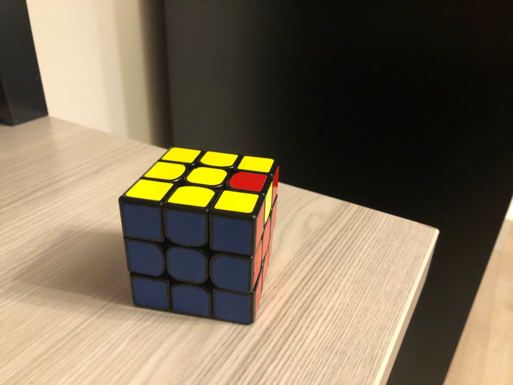

Rubik's Cube Solver

An implementation of a little-known computer-based method of solving a rubik's cube.
Here's a photo of my rubik's cube. It's a Valk 3 I bought when I was younger and still interested in speedcubing.
Anyway, one Sunday I woke up but didn't get up from bed. Instead, I opened hacker news on my phone. Luckily, that led me to read this blog post that outlines a obscure algorithm for solving the rubik's cube.
Humans who solve rubik's cubes because they are addicted enjoy it use one of the
three most popular methods for solving the rubik's cube: CFOP, Roux, and ZZ.
(Of course, if you don't use one of these methods, then you are not human).
But if you are a computer, or more probably if you are a programmer, you might not use any
of these methods because that's boring.
Instead, computers use one of these other algorithms to solve a rubik's cube. One of these methods gives you a short solution, but it's slow and the other method runs fast but gives you a long solution. I don't remember the names of these algorithms. Anyway, the blog post I read described a different algorithm that finds a 20-move solution and takes forever to run. XD
The method is called the 4-list algorithm, and the blog post has some references if you want to read the primary source. The cool thing about this method is that it works for more puzzles than just the rubik's cube.
Basically, the rubik's cube has 48 stickers (not including the centers) that you can move around to scramble or solve the cube. So a rubik's cube state can be represented as a vector of size 48. Then, each move of a face is a permutation of size 48. The scramble is also a permutation. Solving a rubik's cube, then, is factoring the inverse of the scramble permutation into a product of move permutations. That is, if \( s \) is the scramble, and \( p_1, p_2, ..., p_n \) are the permutations that correspond to legal moves, then we want to find \( i_1, i_2, ..., i_m \) such that \[ s^{-1} = p_{i_1} \circ p_{i_2} \circ \dots \circ p_{i_m} \].
The 4-list algorithm is able to solve this general problem of factoring a permutation as a product of a set of given permutations.
I'm not going to summarize how the algorithm works here. You can read the blog post if you want. So anyway, I read this blog post and thought it was really cool because it taught me interesting algorithms, and it used tries, and it had a cool math-y vibe all around. So I decided to implement it. You can check out my code here. I used C++. I estimated the worst case run time to be around 17 days. Like I said, the algorithm is rly slow, but I think I did get it to be faster than the one by the author of the blog post, which was written in Lisp. But to be 100% honest, I'm not super confident that my implement is free of bugs. Maybe I'll come back and take a comb through it again.
Even though the algorithm is unusably slow, I still had lots of fun implementing it. It was very cool, and gave me some opportunity to optimize my memory usage. I think I cut off long branches of the trie, and used a single node to represent a long branch, which saved a bunch of memory.